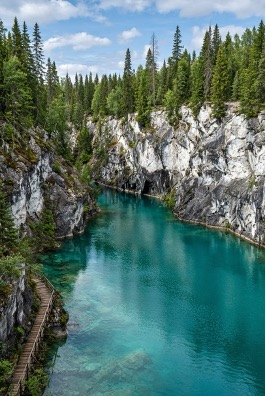

«Легенды Рускеалы»
Наш флагманский тур. Вы посетите мраморный каньон с изумрудной водой, прогуляетесь по горному парку «Рускеала» и увидите водопады Ахвенкоски. Это идеальное путешествие для тех, кто хочет прикоснуться к истории северного края. Во время поездки вы сможете увидеть знаменитые мраморные скалы, полюбоваться прозрачной водой и узнать, как история горных разработок превратила это место в одну из самых известных достопримечательностей Карелии. Рускеала хороша в любую погоду: в ясный день мрамор и вода отливают изумрудом, а в пасмурный каньон становится суше и атмосфернее — многие считают, что именно тогда он раскрывается по-настоящему. Постарайтесь оставить время на неспешную прогулку по верхним тропам парка: с обзорных площадок каньон виден целиком, и именно с высоты понимаешь его масштаб. Фотографировать лучше с утра — днём здесь бывает многолюдно.